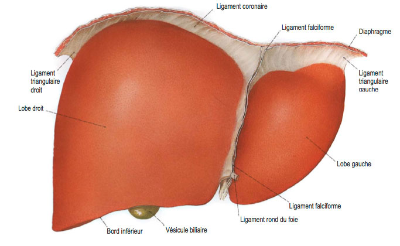

Bienvenue Sur Medical Education
Les hepatites
Definition
Une hepatite est une maladie inflammatoire du foie, d'origine infectieuse.

L'hepatite virale aigee
Diagnostic
Asymptomatique.
Incubation silencieuse. La duree est variable selon le virus.
Phase pre-icterique : pseudo-grippe pendant 7 jours.
Phase icterique de 2 a 6 semaine. Transaminases eleves: 3 a 300.
Traitements
Guerison spontanee complete.
Repos.
Arret de l'alcool.
Arret des medicaments hepatiques toxiques.
L'hepatite virale chronique
Diagnostic
Elle apparaet au bout de 6 mois apres l'hepatite aigue.
Le principal signe est l'asthenie.
Virus B et C responsables
Transaminases elevees mais ne depasse pas 300.
Traitements
Immunosuppresseur.
Antiviraux.
L'hepatite infectieuse
Virale.
Parasitaire.
Bacterienne.
L'hepatite toxique
Alcool (car detruit les cellules hepatiques).
Medicament.
Autres : cyanure, crimes.
L'hepatite auto-immune
Definition
L'hepatite auto-immune correspond a un auto-rejet du foie.
Signes cliniques
Asthenie.
Douleurs articulaires.
Conjonctivites.
Signes biologiques
Augmentation des transaminases.
Presence d'anticorps anti-tissu.
Presence d'anticorps anti-muscle lisse.
Augmentation des gamma-globulines.
Examen complementaire
Biopsie hepatique : foie detruit et nodule : stade de cirrhose.
Traitements
Corticotherapie pendant 1 an.
Greffe si complication.
L'hepatite alcoolique
Signes cliniques
Ictere douloureux.
Febrile.
Signes biologiques
Augmentation des transaminases.
Augmentation des TGO plus que des TGP.
Hyperleucocytose.
Augmentation de la vitesse de sedimentation.
Traitements
Progression progressive avec ou sans cirrhose.
Corticotherapie.
Sevrage alcoolique.
L'hepatite medicamenteuse
Physiopathologie
Dose medicamenteuse superieure a ce que le foie peut recevoir : intoxication medicamenteuse.
Immuno-allergie.
Evolution et complication
Hepatite aigue voire chronique.
L'hepatite A
Mode de transmission
L'hepatite A est la plus frequente des hepatites virales.
La transmission par voie oro-fecale directe (transmission manuportee) ou indirecte (ingestion d'eau ou d'aliments souilles).
Diagnostic
Debute par une jaunisse.
Presence d'anticorps anti-VHA.
Traitements
Le vaccin est tres efficace et sans risque. Il y a 2 injections et 1 rappel : voyage en pays d'endemie, professionnel de la sante, personnel des entreprises d'evacuation des dechets et de la restauration collective.
Hygiene de vie.
L'hepatite B
Mode de transmission
Secretions sexuelles.
Toxicomanie intraveineuse et nasale.
Sang.
Salive.
Diagnostic
Asthenie.
Ictere.
Decouverte au stade de la cirrhose.
Decouverte lors d'une prise de sang : augmentation des transaminases.
Evolutions et complications
90% vont guerir.
Hepatites fulminantes.
Hepatites chroniques.
Cirrhoses.
Carcinome (cancer).
Traitement
Immunosuppresseur (Interferon) pour les hepatites chroniques (les molecules agissent contre le virus en modifiant l'immunite, c'est une molecule anti-tumorale).
Vaccin : traitement preventif.
L'hepatite C
Mode de transmission
Sang.
Toxicomanie intraveineuse ou nasale.
Autres : sexuelle, piqere, profession, entourage.
Diagnostic de l'hepatite C aigue
Asymptomatique.
Syndrome pseudo-grippal.
Ictere.
Presence d'anticorps HVc.
Augmentation de la bilirubine.
Risque de cirrhose ou d'un cancer.
Diagnostic de l'hepatite C chronique
Depistage par une serie de 3 tests : test Elisa.
Asthenie.
Depression.
Presence d'anticorps HVc.
Biopsie hepatique.
Notion de contamination possible.
Lors de decouverte fortuite.
Risque de cirrhose ou d'un cancer.
Traitement
Bien que l'hepatite A et l'hepatite B aient un vaccin, l'hepatite C se traite par des mesures d'hygiene et d'education aupres des jeunes.
Voir aussi :
L'appareil digestif
Module Gastro-enterologie